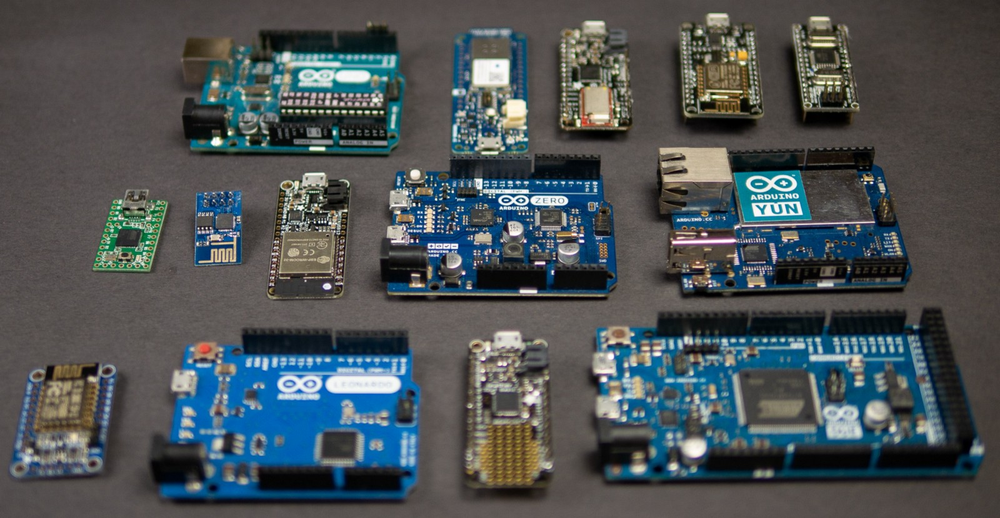

Por acaso você:
Está precisando de alguém para consertar algum eletrônico seu?
Dúvidas em projetos que usam Arduinos ou MSP430?
Ou possui uma empresa porém ainda não criou um site para ela?
Se sim, eu consigo te ajudar nisso.
Primeiramente, o que é um microcontrolador?
Microcontroladores são como mini computadores com uma capacidade de processamento reduzida. Eles facilitam o seu projeto, pois, com a programação certa e os componentes necessários, são capazes de executar praticamente quailquer função. Talvez você ja tenha ouvido falar de um deles, o Arduino.
O mundo está cada vez mais digital, e a principal plataforma de pesquisa hoje em dia é a internet. Criar um site é um dos principais meios de uma empresa ser mais conhecida, para o seu site existir após criá-lo é necessário que ele seja hospedado para que outras pessoas possam vê-lo, e desse modo, elas podem se interessar no seu trabalho e contratar seus serviços.
Desenvolvimento de projetos eletrônicos
Manutenção de eletrônicos
Criação de sites em HTML
Programação em Assembly em MSP430
Programação em C em Arduino e MSP430
Programação básica em Python